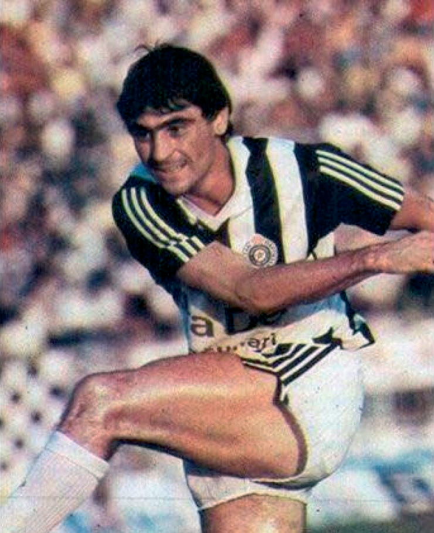
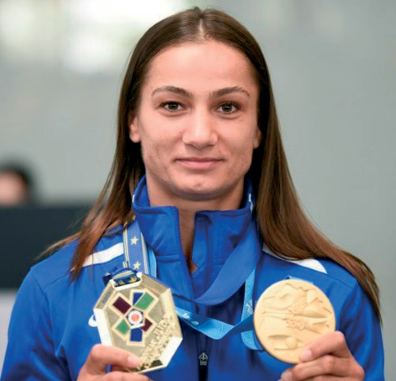

Jeta në Kosovë dikur dhe sot
Kultura - pasuri kombëtare
Situata 1.
Një ditë, në klasën e Kleas, mësuesi kërkoi nga nxënësit të bënin një hulumtim për njerëzit që dhanë kontribut në fusha të ndryshme të artit, si: muzikë, sport, teatër, film e pikturë. Ata vendosën që të punonin në grupe dhe pastaj të prezantonin para klasës.

Grupi i parë: Sportet kolektive
Sportet më të njohura në Kosovë janë: futbolli, basketbolli, hendbolli dhe volejbolli. Ne si grup mblodhëm shënime për futbollin.
Futbolli në Kosovë është një ndër sportet më të zhvilluara. Në tërë Kosovën ka shkolla të futbollit në të cilat ushtrohen shumë fëmijë dhe nga aty kanë dalë shumë talentë.
Në fotografi është paraqitur Fadil Vokrri, emër i njohur i futbollit kosovar.

Grupi i dytë: Sportet individuale
Sportet individuale janë ato që i sollën sukseset më të mëdha Kosovës. Në fotografi është paraqitur njëra ndër sportistet më të njohura kosovare, e cila bëri që emri i Kosovës të përmendej kudo nëpër botë.
Majlinda Kelmendi, xhudistja që i dha Kosovës titullin e parë botëror të xhudos dhe mori edhe shumë medalje të tjera të arta.